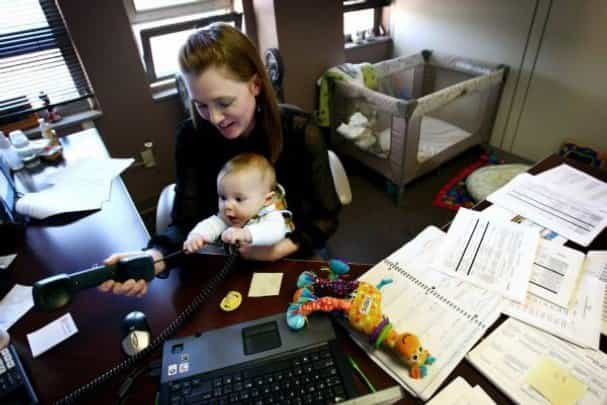
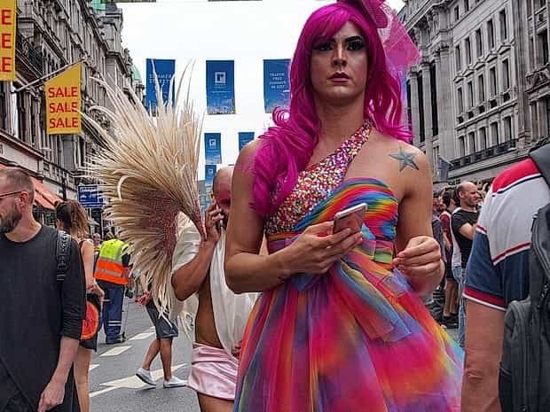
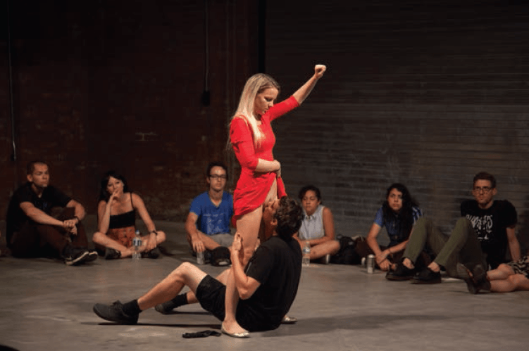

Charlie is a former trainer at PUA Training and currently lives in London. His main focus and passion is daygame, also helping men develop a skillset that most want but never really develop.


What I’m about to say will offend some people, most likely women and of the British kind. But you know what? I don’t care, because this needs to be said. Hurting some feelings takes a back seat to genuinely trying to help men of all races and cultures to wise up.
British Women are TERRIBLE to date and even worse to marry.
I’ve concluded that there are eighteen very distinct reasons why you should never even consider dating a British woman, let alone put a ring on her entitled chubby finger.
Before I get into the exact reasons, I first want to discuss why I have such an intense distaste towards them. Long ago, when I started out in game and pickup, I practiced on thousands of women over several years. I was fortunate enough at the time to be living in London in the centre of town, so all I needed to do was step outside and I’d have access to every nationality of woman imaginable.
As the months went on, my level of game increased and I started to notice that women from different countries were different than British women… in a good way.
This piqued my interest and so I planned a trip with my pal at the time and ended up traveling around Eastern Europe for six months.
What I found on that trip was that as a British man, I had been dealt a bad hand. Eastern European women were far superior to the skanky peasant British ladies (I use the term “ladies” very loosely) and I’d been missing out all these years. I was angry and enlightened at the same time.
Now that I’m married to an Eastern European woman (obviously) I thought this was the perfect time to warn men of the dangers of courting a Brit. So let’s get into it…
I’d touch a girls hair only to find that it was extensions. I’d go in for a kiss of the neck and smell fake-tan. She puts her head on my shoulder and leaves behind a layer of make-up. Or a girl would panic about me breaking her false nails.
False tans, eyelashes, contouring, eyebrows, foundation, lipstick, blusher, eye shadow, eye liner… the list is endless. Expect about an inch of makeup on their faces. The opposite of natural beauty.
They are consumed by the liberal media, gossip magazines, and Facebook/Twitter trends which means they think that they’re giving a lot to men, but in reality, they don’t offer much at all.
I often hear “I want a gentleman that treats me right, who’s rich, intelligent, tall, dark and handsome” but they are fat, ugly, and useless in bed. Plus they can’t cook, have never cleaned, and watch reality TV in the spare time whilst flicking through Instagram or Snapchat.
After you’ve removed the several layers of makeup, you’ll find a face that has blemishes, spots (maybe even acne), and a naturally unattractive face.
Not only that, but they are usually fat. As we all know obesity is at breaking point in the West and continually rising. Well in Great Britain, the women love nothing more than to shove a kebab in the face after a night out and then whinge about getting fat… yet do nothing about it.
The white Brits as a race aren’t really the best looking people in the world as a whole, but the women are especially repulsive I must say.
They give off this self-entitled view of the world and play the victim, because that’s what they think will get them what they want.
Whenever I used to talk to them, I’d feel as though they thought that they had something to offer, when in actual fact they didn’t. I later realised it was utter delusion which has been pressed upon them by the mainstream media and idiots like Katy Perry or Taylor Swift.
There is no work ethic in them, they stomp their fat feet and cry like a child until they get exactly what they want. Daddy never made them see why feminism was a terrible ideology, so they grew up expecting to be handed things on a plate. This laziness spills over to all areas of their life: relationships, fitness, health, sex, and work.
What’s that lady? You want to build a career in law? Well fabulous… what degree are you studying in university? Gender studies? Are you F**KING RETARDED!? Almost every girl I’ve spoken to that’s a Brit has given a stupid reason for choosing their degree.
Not only that, they spent most of their time just pissing about drinking and socialising, instead of working hard and filling their minds with useful knowledge.
We all know that reality TV has taken over our screens and provides us with an endless onslaught of idiots willing to do mindless things in order to promote their z-list TV careers as reality stars. But that’s not the depressing part, oh no.
These shows are devoured by women of all ages and they actually base their own lives on what happens on the screen, like it’s actually real. They have no creativity, no ambitions, work ethic, direction in life. They’re just sheep.
These women don’t need a man to do their dirty work, they can do it themselves, because they are strong and independent. Right, ladies? Wrong.
What’s happened over the past 20 years is British women have become incredibly masculine. Gone are the days of feminine women with beautiful long flowing hair and sexy nails, wearing high heels, and smelling scrumptious.
Now it’s bitten-down nubbin nails (if they aren’t fake), half a shaved head, and regretful cheap tattoos that they got whilst drunk in Magaluf with the girls last summer. Horrible.

Remember the women in the 1950’s? Feminine, happy to look after their men and their children, wanting to keep the house looking good, having a meal ready for the husband when he gets home from work.
Well that’s now dead (as we all know in the West). British women don’t want to be slaves (their own words), they are fine on their own thanks. How dare you suggest a woman be traditional, you misogynist!

Feminism has done an unbelievable job at destroying women’s minds the West. They really think that they can have it all and be happy. That myth is alive and well in the UK.
They have this idea that they can go to school, leave with a degree, fall into a high paying job with little work, find a husband, have a few kids and grow old together. Absolute imbeciles. You can’t have it all. It’s either babies or work… YOU choose.
Every girl loves a bad boy, but British girls especially. They love nothing more than to open their hairy unshaven legs to every guy that’s an arsehole and then complain to their friends when they don’t get a text back from them. At the same time, they moan about not being able to find any nice guys and are quick to dismiss them when a nice guy appears.
It’s not enough that they are more likely to get a better job than a man due to equality in the UK, but they just don’t want men to succeed anymore. Bashing men at any given opportunity. They want everything a man has and more, even then they still aren’t happy.

This may be women in general, but a happy man in the UK usually equals an unhappy woman. They will never admit this, but their actions show that if their boyfriend or husband is having fun, they need to do something that will cause them pain in some way.
As a result, they throw things into the mix to get a reaction or to test them. They don’t find happiness from within themselves, they find it externally through shiny materials and other people’s pain.

Women in the UK have shown their true liberal colours since they’ve been given a feminist platform to show others what they truly feel. Brexit emphasised this BIG time.
They love to embrace the left. So much so, that they dislike anything to do with the right or slightly right of centre. If you argue in a rational manner, they will shout you down with emotional rhetoric. Their feeling matter more than facts.
Every girl has their “Mr. Right” in their mind and they eventually get close to that guy by moulding their boyfriend/husband over time. British women have this unrealistic idea in their heads that they will find a guy that ticks all the boxes and will give them their dream wedding.
They want “tall, dark and handsome”, intelligent, popular, successful and they want their men to live independently. But what do they offer in return?

Sex is a taboo subject in the UK, we love it, but it’s not as in your face as it is in the states. The girls there love to dilute their conversations with sexual innuendos and give a good talk, but when it comes down to it… they are awful in bed.
No skills, no passion and more importantly they have no self respect. They will make the nice guy wait, but will be more than happy to drop to her knees for a bad boy.

One of the worst things about British girls is their constant use of sex as a weapon. You see it in almost all relationships in the UK. The woman will say something like “Ha, well someone’s not getting any action tonight”.
If you’re terrible in bed, overweight and ugly… how can you possibly use sex as a weapon? Yes… the thirst is REAL in the UK. British men are in serious need of help, which is why the younger generation of men is so split.
Another wonderful idea thats comes straight from the feminist movement and liberal left. If you’re fat as a woman in the UK, you’re not considered disgusting, you’re actually referred to as big boned, plus size, curvy, bubbly or my favourite “full figured”.
Because they are lazy, instead of hitting the gym and eating less junk food, they decided it was the fault of men that they are fat and they will have to live with it. Fat is now body positive, not a health risk.
Now I’m fully aware that I’m going to get a fair amount of hate for saying this about my fellow British females, but I truly don’t care because I’m never going to be romantically involved with them ever again, so it doesn’t bother me. As for men who thought women from the UK were girlfriend or wife material… THINK AGAIN MATE! Avoid this country at all costs for native females.
Lastly, I’ve seen a lot of women and weak men actually who comes up with this ridiculous assumption that because I don’t think British women are attractive that I must not be able to get them or that they are “real” women.
BAAAHAHAHAHAHA! (picture me rolling on the floor laughing uncontrollably). The delusion is unbelievable to me, especially in the West. Utter morons.
Let me know your thoughts and experiences with dating women from my homeland below, I’d be interested to hear your thoughts. If you’re a Brit and you’re married to a British girl… may god help you. And if you’re looking for straight talking advice on how to meet and attract women outside of Britain, take a look at my site PUA Training.
Read More: British Woman Abandons Her Husband And 9 Children For African Lover